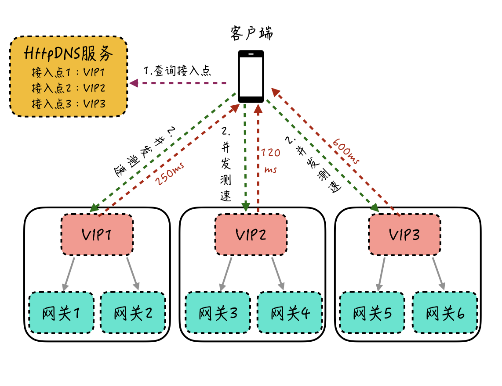
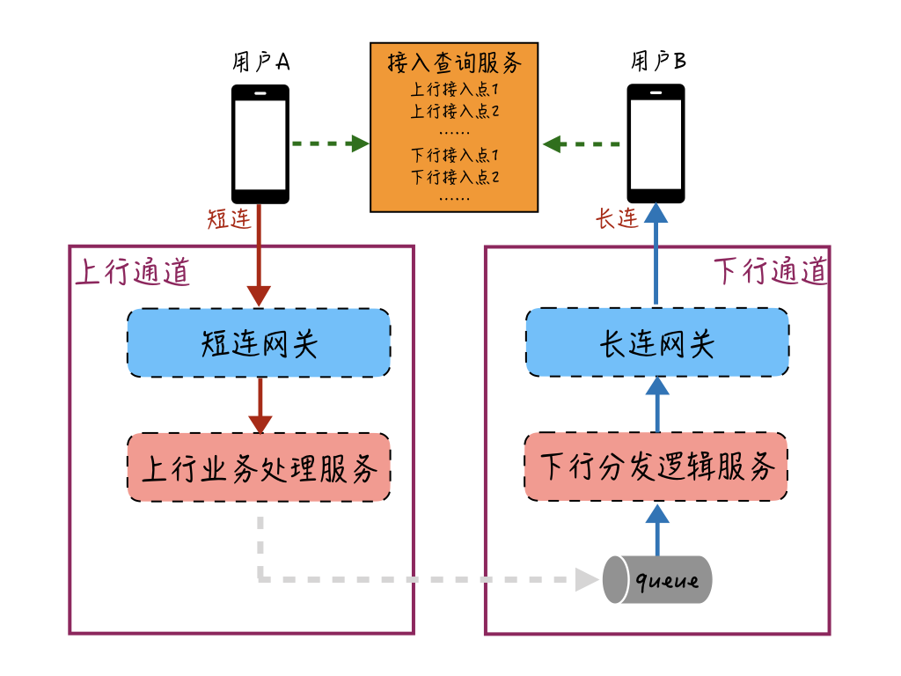

- 00 开篇词 搞懂“实时交互”的IM技术，将会有什么新机遇？.md.html
- 01 架构与特性：一个完整的IM系统是怎样的？.md.html
- 02 消息收发架构：为你的App，加上实时通信功能.md.html
- 03 轮询与长连接：如何解决消息的实时到达问题？.md.html
- 04 ACK机制：如何保证消息的可靠投递？.md.html
- 05 消息序号生成器：如何保证你的消息不会乱序？.md.html
- 06 HttpDNS和TLS：你的消息聊天真的安全吗？.md.html
- 07 分布式锁和原子性：你看到的未读消息提醒是真的吗？.md.html
- 08 智能心跳机制：解决网络的不确定性.md.html
- 09 分布式一致性：让你的消息支持多终端漫游.md.html
- 10 自动智能扩缩容：直播互动场景中峰值流量的应对.md.html
- 11 期中实战：动手写一个简易版的IM系统.md.html
- 12 服务高可用：保证核心链路稳定性的流控和熔断机制.md.html
- 13 HTTP Tunnel：复杂网络下消息通道高可用设计的思考.md.html
- 14 分片上传：如何让你的图片、音视频消息发送得更快？.md.html
- 15 CDN加速：如何让你的图片、视频、语音消息浏览播放不卡？.md.html
- 16 APNs：聊一聊第三方系统级消息通道的事.md.html
- 17 Cache：多级缓存架构在消息系统中的应用.md.html
- 18 Docker容器化：说一说IM系统中模块水平扩展的实现.md.html
- 19 端到端Trace：消息收发链路的监控体系搭建.md.html
- 20 存储和并发：万人群聊系统设计中的几个难点.md.html
- 21 期末实战：为你的简约版IM系统，加上功能.md.html
- 22 答疑解惑：不同即时消息场景下架构实现上的异同.md.html
- 结束语 真正的高贵，不是优于别人，而是优于过去的自己.md.html
- 捐赠
13 HTTP Tunnel：复杂网络下消息通道高可用设计的思考
你好，我是袁武林。
在第1讲“架构与特性：一个完整的IM系统是怎样的？”中，我有讲到即时消息系统中非常重要的几个特性：实时性、可靠性、一致性、安全性。实际上，这些特性的实现大部分依赖于通道层的稳定和高可用。
对于即时消息系统来说，消息的通道主要承载两部分流量：一部分是用户发出的消息或者触发的行为，我们称为上行消息；一部分是服务端主动下推的消息和信令，我们称为下行消息。
由此可见，消息通道如果不稳定，一来会影响用户发送消息的成功率和体验，二来也会影响消息的下推，导致用户没法实时收到消息。
那么，在面对如何保障消息通道的高可用这一问题时，业界有哪些比较常用的优化手段呢？
让消息通道能连得上
要保障消息通道的高可用，最基本的是要让通道能随时连得上。不过你可能会觉得，这看起来好像挺简单的，不就是申请个外网虚拟IP，把接入层服务器挂上去，然后通过域名暴露出去就行了吗？
但实际上，这个“连得上”有时真正做起来却不是那么容易的，主要原因在于用户的网络情况复杂性高。比如，有的用户走2G网络来连，有的通过HTTP代理来连，还有的会出现DNS解析服务被封的情况，诸如此类。
此外，移动运营商各种比较奇怪的限制也会导致连通性不佳的问题。因此，要想你的通道能让用户随时都连得上，还需要做一些额外的优化。
多端口访问
首先就是端口的连通性问题。
计算机端口范围是0 ~ 65535，主要分成三大类：公认端口（0 ~ 1023）、注册端口（1024 ~ 49151）、动态或私有端口（49152 ~ 65535）。
虽然理论上大部分公认端口和注册端口都可以在外网暴露，但实际上，由于移动网管代理的端口限制，以及一些网管软件为了控制安全风险，只允许访问某些端口，因此大部分端口都存在连通性的风险。
目前，业界确认比较安全的端口基本上只有80、8080、443、14000这几个。因此如果开发一个外网服务，我们应当尽量选用这几个端口来对外进行暴露，确保可连通性。
此外，还可以通过同时暴露这几个端口中的某几个，来进一步提升可连通性。当其中一个端口出现连通性问题时，另外的端口还可以作为Failover端口，当作备用端口来连接。
HTTP Tunnel
除了端口上的连通性问题，由于防火墙访问规则限制的问题，或者通过某些代理上网的用户，还存在某些协议不支持的问题。
比如，一些公司或者酒店的网络代理只允许通过HTTP协议访问外网（PS：早期通过CMWAP接入点上网也有这个限制，不过在2011年后，随着CMWAP和CMNET的接入点融合，这个问题得到了解决），这样即时消息系统中，通过TCP或者UDP实现的私有协议，就没法通过网络代理的校验，也会导致连不上的问题。
这种场景，我们可以通过HTTP Tunnel的方式来对网络代理进行穿透。
所谓HTTP Tunnel，其实就是通过HTTP协议，来封装其他由于网络原因不兼容的协议（比如TCP私有协议）。
这样不仅解决了网络协议连通性问题，而且因为HTTP Tunnel也只是在原来的私有协议内容最外层做了最轻量的HTTP封装（HTTP Body内容就是二进制的私有协议），所以协议解析时也基本没有额外的代价。
多接入点IP列表
在第6讲“HttpDNS和TLS：你的消息聊天真的安全吗？”中讲消息通道安全性的时候，我就有提到，通过HttpDNS能解决DNS劫持的问题。
其实，借助HttpDNS，我们还能通过返回多个接入点IP来解决连通性的问题，后续一个连接失败就尝试下一个，这样就相当于给我们提供了一个接入点的Failover机制。
同时，为了防止通过HTTP请求DNS时出现失败或者超时的问题，我们还可以在客户端进行接入点的预埋。
比如，预埋一个域名和几个常用的接入点IP，用这个作为请求接入最后的兜底策略。当然，这些预埋的域名和接入点IP一般需要尽量保证稳定性，如果有变动，需要及时预埋到新版App中。
让消息通道连得快
解决了通道连得上的问题，接下来我们需要考虑的就是怎么让接入方能连得快。这里有两种实现方式：一个是通过解决跨网延迟来避免通道连接过慢，另一个可以通过跑马竞速来选择速度最快的通道进行接入。
解决跨网延迟
同样在第6讲中有提到，由于运营商跨网延迟的问题，我们希望能尽量让某一个运营商的用户，通过托管在接入了这个运营商专线的机房接入点，来接入网络。因此，要让用户连得快，首先要求我们需要有多运营商机房的接入点；其次，要避免运营商DNS解析转发和NAT导致接入IP被解析到其他运营商的问题。
第一个多运营商机房的要求比较好实现，基本只是成本方面的投入，目前很多IDC机房都支持多线运营商接入。
第二个问题，我们可以通过之前讲到的HttpDNS来解决。HttpDNS能直接获取到用户的出口网关IP，调度更精准，而且绕过了运营商的LocalDNS，不会出现DNS解析转发导致错误调度的问题。
跑马竞速
除了避免跨网导致通道连接慢的问题之外，对于返回的多个接入点IP，实际上由于用户上网地点不同和路由规则不同等原因，连接接入点IP时，延迟也是不一样的。
因此，我们还可以通过跑马竞速的方式，来动态调整每一个用户优先连接的接入点IP。所谓的“跑马竞速”，你可以理解为类似赛马一样，我们一次放出多匹马参与比赛，最终跑得最快的马胜出。
App终端会对返回的接入点IP列表中的所有IP进行跑马测试，并将测速结果上报给服务端，服务端根据这个测速结果，结合后端接入服务器的负载，来动态调整接入点IP列表的顺序，让用户优先选用速度更快的接入点。
这里我举一个简单的接入点跑马竞速实现的例子：客户端在启动时，通过HttpDNS服务获取到多个接入点VIP1、VIP2和VIP3，此时客户端针对这3个VIP进行并发测速（一般可以通过访问一个固定大小的静态页面来实现），根据每个VIP的整体响应耗时来决定后续正式的连接使用哪个VIP。这里，由于VIP2响应耗时最少，最后客户端会选择使用VIP2来进行接入。这个过程你可以参考下图。

让消息通道保持稳定
解决了消息通道连得上和连得快的问题，另一个提高消息通道可用性的重要手段是让通道能尽量保持稳定。那么，都有哪些因素会导致消息通道不稳定呢？
通道和业务解耦
我们知道，对于通道中收发的消息会进行很多业务逻辑的操作，比如消息存储、加未读、版本兼容逻辑等。随着需求的不断迭代和新功能的增加，可能还会新增业务协议或者修改原有业务协议的字段，这些变更都是紧随业务变化的，相对会比较频繁。
但是在即时消息系统中，消息的收发是严重依赖长连接通道的，如果我们的通道层需要跟随业务的变化而不断调整，那么就会导致通道服务也需要频繁地上线、重启。这些操作会让已经连到通道机器的用户连接断开，虽然客户端一般都会有断线重连的机制，但是频繁地断连也会降低消息收发的成功率和用户体验。
因此，要提高消息通道的稳定性，我们要从架构上对通道层进行业务解耦，通道层只负责网络连接管理和通用的逻辑处理。
比如，用户和连接的映射维护、通信协议的编解码、建连和断连逻辑处理、ACK包和心跳包处理等，将变化较大的业务逻辑下沉到后端的业务处理层。这样不管业务怎么变动，我们的通道网关服务都不需要跟着变更，稳定性也会更好。
上下行通道隔离
除了让通道层和业务隔离，面对消息下推压力比较大的场景，还可以对上下行通道进行拆分隔离。
比如对于直播互动的场景，下推消息由于扇出大，因此当遇到大型直播的时候下行通道的压力会加大，虽然可以通过限流、降级、扩容等方式来缓解，但在这时，系统的整体负载和流量都是比较大的。
这种场景下，我们可以对上下行通道进行拆分隔离，用户上行的消息和行为通过一个短连通道发送到服务端。这样既能避免客户端维护多个长连接的开销，也能解决上行通道被下推消息影响的问题。
想要做进一步的优化，我们还可以让这个短连接不是每一次发送完就断开，而是支持一定时间的空闲而不断开（比如2分钟），这样对于用户连续发消息的情况，不需要每次再有重新建连的开销，用户体验也会更好一些。
下面画了一个图来简单描述下如何对上下行通道进行拆分隔离：

用户A和用户B分别都通过接入查询服务来获取最优接入点，用户A通过上行通道的短连接网关来发送消息，发送的消息在上行业务处理服务进行存储、加未读等业务操作；然后通过消息队列把这条消息给到下行通道，下行分发逻辑服务查询用户B的在线状态等信息，并对消息进行必要的推送准备处理（比如版本兼容处理）；接着把消息给到用户B的长连接所在的长连网关机器，长连网关机器再将消息推送到用户B的设备中。
这样，我们的上下行通道就通过消息队列的方式进行了隔离和解耦。
独立多媒体上传下载
对于图片、视频等多媒体消息，由于数据传输量一般都比较大，如果也和普通文本消息收发的通道放在一条连接里，可能会导致消息收发通道出现阻塞，因此我们一般会开辟新的连接通道来传输二进制的文件流。这种优化方式除了能保护消息收发的核心通道，也能缩短上传下载的链路，提高媒体消息收发的性能。针对多媒体消息的整体上传下载的优化，我们在接下来的14和15篇中会详细讲解，这里先不做展开了。
小结
我们简单回顾一下今天的课程内容。这节课我介绍了一下消息通道在复杂网络情况下，会出现连通性、延迟问题，以及在连接稳定性等方面容易出现连不上、速度慢、连接不稳定的问题，通过分析这些问题出现的具体原因，有针对性地提出了解决这些问题的办法。
- 在解决“通道连不上”的问题上，我们可以通过暴露多个业界验证过比较安全的连接端口，来解决端口连通性问题；通过HTTP Tunnel，来解决某些网络情况下只允许HTTP协议的数据传输的问题；通过HttpDNS和客户端预埋的方式，提供多个可选的通道接入点，让某些接入点在连不上时还能尝试其他接入点。
- 在解决“通道连接慢”的问题上，我们可以通过支持多运营商机房接入点，来避免用户的跨运营商网络访问；此外，对于提供的多接入点，客户端还可以通过“跑马竞速”的方式优先使用连接速度更快的接入点来访问。
- 在解决“通道不稳定”的问题上，我们主要从服务端的架构设计着手，让我们的通道层服务和变化频繁的业务进行解耦，避免业务频繁变动导致通道层服务不稳定；对于消息下行通道压力大的业务场景，还可以隔离消息上下行通道，避免消息的上行被压力大的下行通道所影响；另外，将多媒体的上传下载通道和消息收发的核心通道进行隔离，避免传输量大的多媒体消息造成通道的阻塞，影响消息收发。
面对复杂的移动网络场景，由于不可控因素实在太多，稍不注意我们就容易踩到这样或者那样的坑。比如，我以前的业务里，曾经就出现过由于对外暴露的接入端口不是常见端口，导致很多用户连接不上的情况。但是，通过逐步的摸索和踩坑，也积累了针对移动网络复杂环境下的诸多经验，希望这些经验能够帮助你以后尽量避免出现同样的问题。
最后，给你留一道思考题：上下行通道隔离能够隔离保护我们的消息接收和消息发送，那么通道隔离会不会带来一些负面影响呢？
以上就是今天课程的内容，欢迎你给我留言，我们可以在留言区一起讨论。感谢你的收听，我们下期再见。
© 2019 - 2023 Liangliang Lee. Powered by gin and hexo-theme-book.